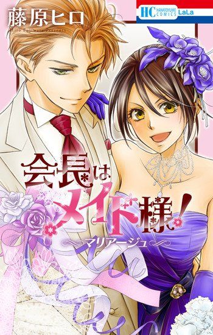
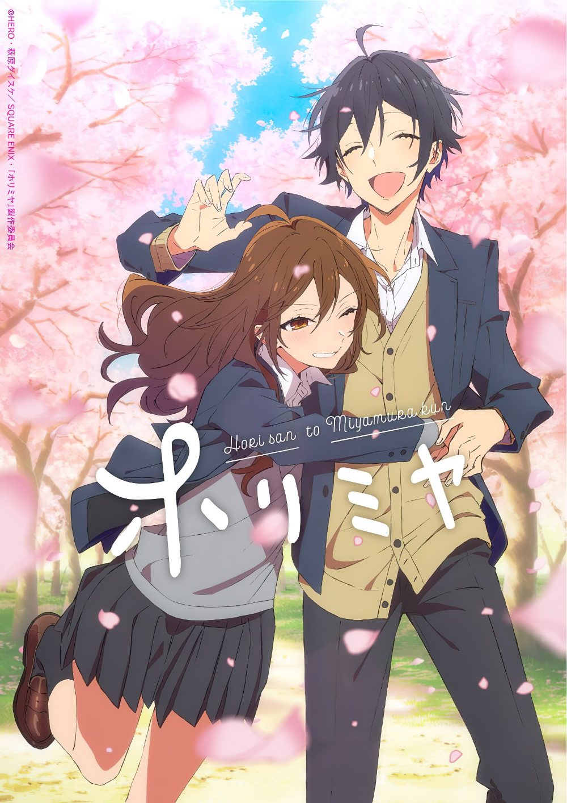

Anime de gen Romantică:

Kaichou wa Maid-sama!
Once an all-boys high school, Seika High, infamous for its rowdy students, has recently become a co-ed school. However, with the female population still remaining a minority even after the change over the recent years, Misaki Ayuzawa works hard to make the school a better place for girls. She puts a lot of effort into academics and athletics, and earns the trust of the teachers. Eventually, she becomes the first female student council president. Misaki has gained a reputation, among the male students body as a strict boy-hating demon dictator and as a shining hope for the teachers and fellow female students. However, despite her reputation, she secretly works part-time at a maid café in order to support her ill mom and sister by returning the huge debt their father had left them.

Once an all-boys high school, Seika High, infamous for its rowdy students, has recently become a co-ed school. However, with the female population still remaining a minority even after the change over the recent years, Misaki Ayuzawa works hard to make the school a better place for girls. She puts a lot of effort into academics and athletics, and earns the trust of the teachers. Eventually, she becomes the first female student council president. Misaki has gained a reputation, among the male students body as a strict boy-hating demon dictator and as a shining hope for the teachers and fellow female students. However, despite her reputation, she secretly works part-time at a maid café in order to support her ill mom and sister by returning the huge debt their father had left them.
HORIMIYA
Kyoko Hori is a bright and popular high school student, in contrast to her classmate Izumi Miyamura, a gloomy and seemingly nerdy, glasses-wearing boy. At home, Hori is a homebody who dresses down and looks after her younger brother Souta. She takes every attempt to hide this from her classmates. Once, Souta was assisted by someone with numerous earrings and tattoos, as well as a punk-styled look, when he came home with a nosebleed one day. The person recognizes her and introduces himself as Miyamura. They agree to keep their true identities concealed from their peers, but they begin to relate to each other as friends and then as a couple.
Kyoko Hori is a bright and popular high school student, in contrast to her classmate Izumi Miyamura, a gloomy and seemingly nerdy, glasses-wearing boy. At home, Hori is a homebody who dresses down and looks after her younger brother Souta. She takes every attempt to hide this from her classmates. Once, Souta was assisted by someone with numerous earrings and tattoos, as well as a punk-styled look, when he came home with a nosebleed one day. The person recognizes her and introduces himself as Miyamura. They agree to keep their true identities concealed from their peers, but they begin to relate to each other as friends and then as a couple.
 Elaborat de Poștaru Adelina
Elaborat de Poștaru Adelina